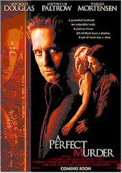
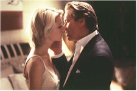

Contents | Features | Reviews | Books | Archives | Store |
 |
|
| Movie Credits | Buy It! |
A Perfect Murder
Review by Elias Savada
Posted 5 June 1998
|  | Directed by Andrew Davis. Starring
Michael Douglas, Gwyneth Paltrow, Written by Patrick Smith Kelly, |
Another summer blip of a film. In one week, out a few later. The filmmakers must have thought bigger thoughts in putting together this streamlined, high gloss, touch-tone remake of the lesser-Hitchcock classic of 44 years ago, in turn based on the successful original London play and its Broadway iteration (together boasting nearly 1,000 performances). But even a minor Hitchcock (in 3-D no less) is more worthy a re-viewing that this glitzy, greedy widescreen retread. In this technology-advanced day, harken ye back to the days of rotary dialing.
Director Andrew Davis and many of the technicians that made The Fugitive such a success (including four producers, two editors, and Oscar-winning composer James Newton Howard) now stumble in a Pyrrhic victory of upper-class style over substance. I shiver in terror at the latest threat to the memory of the master of suspense – a planned shot-by-shot re-filming of Psycho starring Will Smith. Why can't Hollywood leave well enough alone?
A Perfect Murder follows the disintegrating marriage of the very moneyed Emily Bradford Taylor (Gwyneth Paltrow) and her older, very workaholic husband Steven (Michael Douglas), supplanting Grace Kelly and Ray Milland from the original film version. Emily hasn't let her family's riches get to her head, as she's a talented multi-lingual translator at the U.S. mission to the United Nations. Seemingly unloved by her icy spouse (he's struggling to save his crumbling financial empire from a Chernobyl-size collapse), Emily is merely a treasured adornment for him, much like one of the many jewels she wears, be it at a reception at the Metropolitan Museum of Art or at a presentation of love in the afternoon at the Brooklyn loft of David Shaw (Viggo Mortensen), a struggling artist and current squeeze of the spurned missus. As vicious as Steven is with his corporate connivings, he can't get to first base on the domestic front. Perhaps he needs a dose of Viagra. Instead this emotional-challenged guppy opts for murder.
The marital tensions (as audibly defined by tremulous string arrangements in the musical score) warrant Emily to confront her "clueless" husband with her infidelities. Too late, as the ne'er-do-well has already contracted out for her demise. In the original film, the Ray Milland character blackmails a former acquaintance into doing the dastardly deed; in the current edition, Steven picks the lover himself, who, unknown to Emily, is an ex-con with a falsified resume. To her he is a Bohemian who studied at Berkeley. In reality, he's been a pickpocket, gigolo, and served time in Soledad. Ever the sly one, the jilted husband tries to envision the fall of the dominoes as his murderous plan moves forward, but speed bumps keep popping in his scheme and the plot plods along like a board game or a game of connect-the-dots. Not too exciting if your expecting an exhilarating motion picture.
Another problem with this film is the all-too-obvious contrivance of objets des morts, formerly known as maguffins when used by Hitchcock in his work. Maybe I'm too conditioned in noticing this stuff and realize the ultimate use of such items – dropped envelopes, a meat thermometer, a house key, etc. – may actually titillate modern audiences. I hear some of you saying I'm too fond of the first version, but I like surprises and A Perfect Murder provides none.
Another mistake is the diminished role of the New York City police detective Mohamed Karaman (David Suchet) from the original Scotland Yard Chief Inspector Hubbard (John Williams), a key part in the 1954 film. He's the only sympathetic character in the remake and manages to make his presence known in the few minutes he appears, often with a perceptive glance here or a raised eyebrow there as he scours the Taylor's luxurious Fifth Avenue apartment for clues.
It was reported that test audiences were unhappy with the original ending and it was re-shot. The release version isn't all that hot either. Barely passable. Viewership should evaporate in the absence of any motivating factors in A (Im)Perfect Murder. My suggestion...go see The Truman Show.
Contents | Features | Reviews | Books | Archives | Store
Copyright © 1999 by Nitrate Productions, Inc. All Rights Reserved.